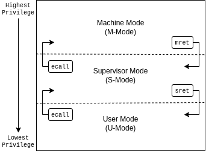
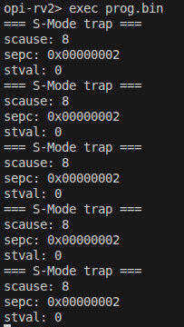
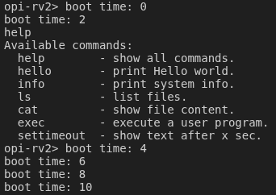
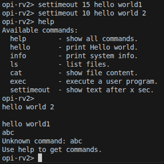

Lab 4: Exception and Interrupt#
Introduction#
An exception is an event that causes the currently executing program to relinquish the CPU to the corresponding handler. With the exception mechanism, an operating system can
handle errors properly during execution,
allow user programs to request system services,
respond to peripheral devices that require immediate attention.
Goals of this lab#
Understand the exception mechanism in RISC-V.
Understand how interrupt delegation works in the OrangePi RV2 platform.
Configure and handle core timer interrupts using the SBI Timer Extension.
Understand and handle UART interrupts via the PLIC.
Learn how to multiplex timers and schedule asynchronous tasks.
Background#
Official Reference#
Exceptions and interrupts in RISC-V are defined in the official privileged specification. For details, see:
RISC-V Privileged Architecture Manual: riscv/riscv-isa-manual
Exception Levels (Privilege Modes)#
RISC-V defines privilege modes to isolate different system components. In our OS design, the kernel executes in Supervisor mode (S-mode), while user applications execute in User mode (U-mode).

In this lab, you will run both kernel and user-mode programs, using sret to switch from S-mode to U-mode, and configuring trap handling via the following CSRs: stvec, sscratch, sepc, scause, and sstatus.
Supervisor Control and Status Registers (CSRs)#
RISC-V provides dedicated CSRs to manage and observe the state of traps (exceptions and interrupts). To implement a robust trap handler in S-mode, you are expected to independently consult the RISC-V Privileged Specification to understand the precise roles and hardware behaviors of the following key registers: sstatus, stvec, sepc, scause, stval, sscratch, and sie.
Hint
Before diving into the code, ensure you clearly understand what information the hardware automatically writes to these registers when a trap occurs, and which registers are read by the hardware when the sret instruction is executed.
Core Timer and SBI#
In S-mode, the kernel relies on the Supervisor Binary Interface (SBI) to manage timer interrupts.
Key concepts for S-mode timers:
time CSR: A 64-bit read-only register that reflects the current timer value (accessible via the rdtime instruction).
SBI Timer Extension: To schedule a timer interrupt, the S-mode kernel must call sbi_set_timer(uint64_t stime_value). The SBI implementation will configure the underlying hardware and trigger a timer interrupt to S-mode when the specified time is reached.
Interrupt Controllers - PLIC#
OrangePi RV2 uses the Platform-Level Interrupt Controller (PLIC) to handle external interrupts from devices such as UART.
Key facts:
Each device interrupt has an ID.
PLIC routes interrupt requests to CPU cores with a priority mechanism.
Each hart has context-specific registers to claim/complete interrupts.
See documentation or DTB for actual interrupt IDs and PLIC base addresses.
Critical Sections#
As in all interrupt-driven systems, shared data must be protected from concurrent access during interrupt handling. In RISC-V, this can be done by disabling interrupts via csrci sstatus, SSTATUS_SIE and re-enabling via csrsi.
Basic Exercises#
Basic Exercise 1 - Exception - 30%#
To run a user program safely, your kernel must set up an environment that allows jumping into U-mode and successfully catching the exception when the user program wants to return or execute a system call.
Mode Switch: S-mode to U-mode#
After booting in S-mode, configure registers to switch to U-mode and run user-level programs. Setup includes:
Writing user program address to sepc
Setting sstatus to enable interrupts and select U-mode
Using sret to jump to U-mode
Todo
Add command exec that can load the user program in the initramfs. Then, run it in U-mode by steps mentioned above.
Trap Handling from U-mode#
When the user program executes an ecall, it traps to the S-mode handler. You need to:
Before entering U-mode, ensure
stvecis pointing to your trap handler assembly routine.Save user context (
x1-x31,sepc,sstatus)Print diagnostic info from
scause,sepc,stvalRestore context and return to user using
sret
Todo
Set the vector table and implement the exception handler.
The result would be like this:

Basic Exercise 2 - Core Timer Interrupt - 10%#
Timer interrupts are essential for OS scheduling. You will use the Supervisor Binary Interface (SBI) to program the timer.
Read the current time using the
rdtimeinstruction.Calculate the target time by adding twice the CPU’s frequency to the current time (this represents 2 seconds).
Call
sbi_set_timer(target_time)to schedule the interrupt.Set the
STIEbit in thesieregister to enable timer interrupts.Set the
SIEbit insstatusto enable global interrupts.When the interrupt triggers (checked via
scause), print the number of seconds passed since boot.Reprogram the timer for the next 2 seconds using the SBI call again.
Todo
Enable the core timer’s interrupt. The interrupt handler should print the seconds after booting every 2 seconds and set the next timeout to 2 seconds later.
The result would be like this:

Basic Exercise 3 - OrangePi RV2 UART0 Interrupt - 30%#
Currently, your uart_getc and uart_puts are likely blocking (busy-waiting). You must make them asynchronous using PLIC interrupts and ring buffers.
Enable UART0 interrupt via:
UART interrupt enable register (check OrangePi RV2 SoC manual or DTS; likely UART0.IER)
Enable UART interrupt ID (e.g., 10) in the PLIC
Set sie.SEIE and enable external interrupts globally
Steps:
Setup read/write buffers.
Implement ISR for UART RX and TX.
In RX, place incoming bytes in buffer.
In TX, send data from buffer when ready.
In the PLIC, read the Claim register to get the IRQ number, handle it, and write the IRQ number back to the Complete register.
Todo
Implement the asynchronous UART read/write by interrupt handlers.
Advanced Exercises#
Advanced Exercise 1 - Timer Multiplexing - 20%#
Timers can be used to do periodic jobs such as scheduling and journaling and one-shot executing such as sleeping and timeout. However, the number of hardware timers is limited. Therefore, the kernel needs a software mechanism to multiplex the timer.
One simple way is using a periodic timer. The kernel can use the tick period as the time unit and calculate the corresponding timeout tick. For example, suppose the periodic timer’s frequency is 1000HZ and a process sleeps for 1.5 seconds. The kernel can add a wake-up event at the moment that 1500 ticks after the current tick.
However, when the tick frequency is too low, the timer has a bad resolution. Then, it can’t be used for time-sensitive jobs. When the tick frequency is too high, it introduces a lot of overhead for redundant timer interrupt handling.
Another way is using a one-shot timer. When someone needs a timeout event, a timer is inserted into a timer queue. If the timeout is earlier than the previous programed expired time, the kernel reprograms the hardware timer to the earlier one. In the timer interrupt handler, it executes the expired timer’s callback function.
In this advanced part, you need to implement the timer API that a user can register the callback function when the timeout using the one-shot timer(the core timer is a one-shot timer). The API and its use case should look like the below pseudo code.
//An example API
void add_timer(void (*callback)(void*), void* arg, int sec){
...
}
//An example use case
void sleep(int duration){
add_timer(wakeup, current_process, duration);
}
To test the API, you need to implement the shell command setTimeout SECONDS MESSAGE.
It prints MESSAGE after SECONDS with the current time and the command executed time.
Todo
Implement the setTimeout command with the timer API.
Important
setTimeout is non-blocking. Users can set multiple timeouts.
The printing order is determined by the command executed time and the user-specified SECONDS.
This is an example:

Advanced Exercise 2 - Concurrent I/O Devices Handling 20%#
The kernel needs to handle a lot of I/O devices at the same time. For devices(e.g. UART) that have a short period of process time, the kernel can finish their handlers immediately right after they’re ready. However, for those devices(e.g. network interface controller) that require a longer time for the follow-up processing, the kernel needs to schedule the execution order.
Usually, we want to use the first come first serve principle to prevent starvation. However, we may also want prioritized execution for some critical handlers. In this part, you need to know how to implement it using a single thread(i.e. a single stack).
Decouple the Interrupt Handlers#
A simpler way to implement an interrupt handler is processing all the device’s data one at a time with interrupts disabled. However, a less critical interrupt handler can block a more critical one for a long time. Hence, we want to decouple the interrupt handler and the actual processing.
This can be achieved by a task queue. In the interrupt handler, the kernel
masks the device’s interrupt line,
move data from the device’s buffer through DMA, or manually copy,
enqueues the processing task to the event queue,
do the tasks with interrupts enabled,
unmasks the interrupt line to get the next interrupt at the end of the task.
Those tasks in the queue can be processed when the system is idle. Also, the kernel can execute the task in any order such as FIFO or LIFO.
Todo
Implement a task queue mechanism, so interrupt handlers can add their processing tasks to it.
Nested Interrupt#
The tasks in the queue can be executed at any time, but we want them to be executed as soon as possible. It’s because that a high-priority process may be waiting for the data.
Therefore, before the interrupt handler return to the user program,
it should execute the tasks in the interrupt context with interrupts enabled (otherwise, critical interrupts are blocked).
Then, the interrupt handler may be nested.
Hence, besides general-purpose registers, you should also save sstatus and sepc so the previously saved data are preserved.
Todo
Execute the tasks in the queue before returning to the user program with interrupts enabled.
Preemption#
Now, any interrupt handler can preempt the task’s execution, but the newly enqueued task still needs to wait for the currently running task’s completion. It’d be better if the newly enqueued task with a higher priority can preempt the currently running task.
To achieve the preemption, the kernel can check the last executing task’s priority before returning to the previous interrupt handler. If there are higher priority tasks, execute the highest priority task.
Todo
Implement the task queue’s preemption mechanism.
In this advanced part, you need to implement the task API that the kernel can register a callback function with priority. The API and its use case should look like the below pseudo code.
//An example API
typedef void (*task_callback_t)(void *arg);
void add_task(task_callback_t callback, void *arg, int priority) {
...
}
//An example use case
void test_task_cb(void *arg) {
uart_puts("[Task] Executing Priority ");
uart_putc((char*)arg);
uart_putc("\n");
}
void main(...){
...
add_task(test_task_cb, "3", 3);
...
}
Todo
Implement the add_task api.